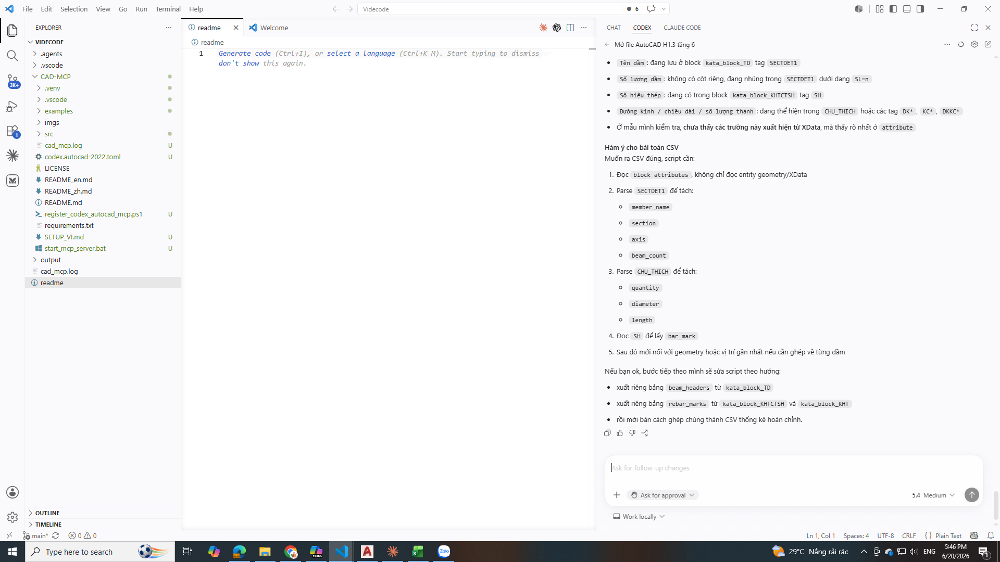
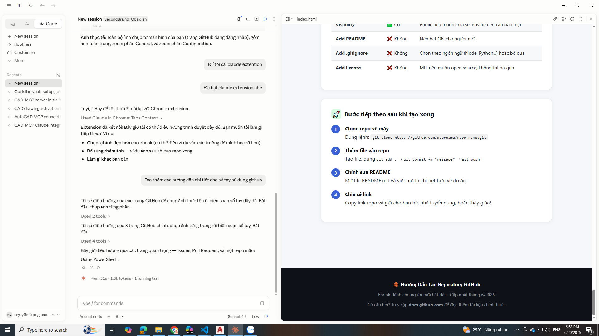
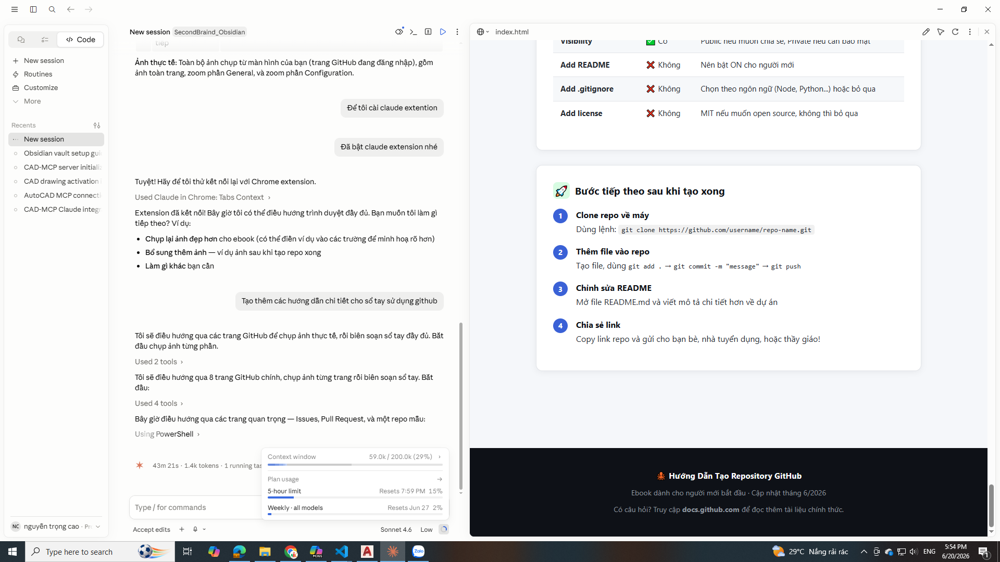
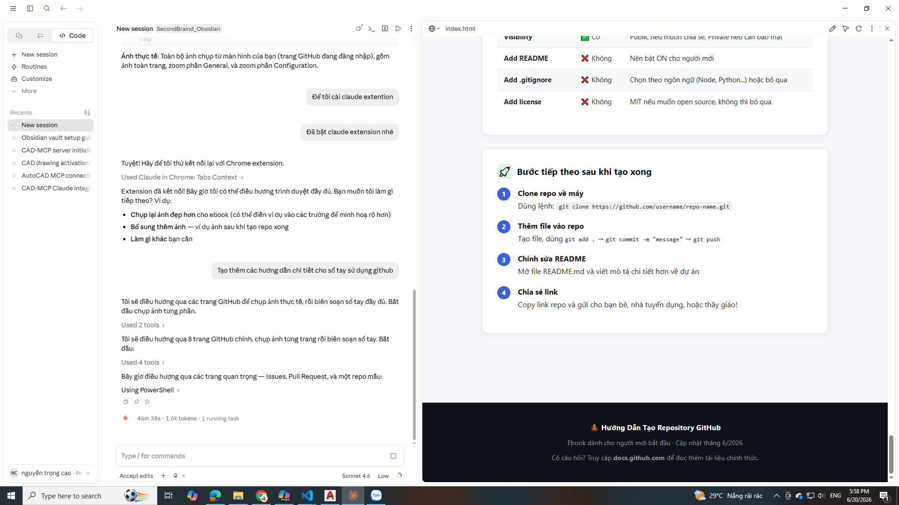
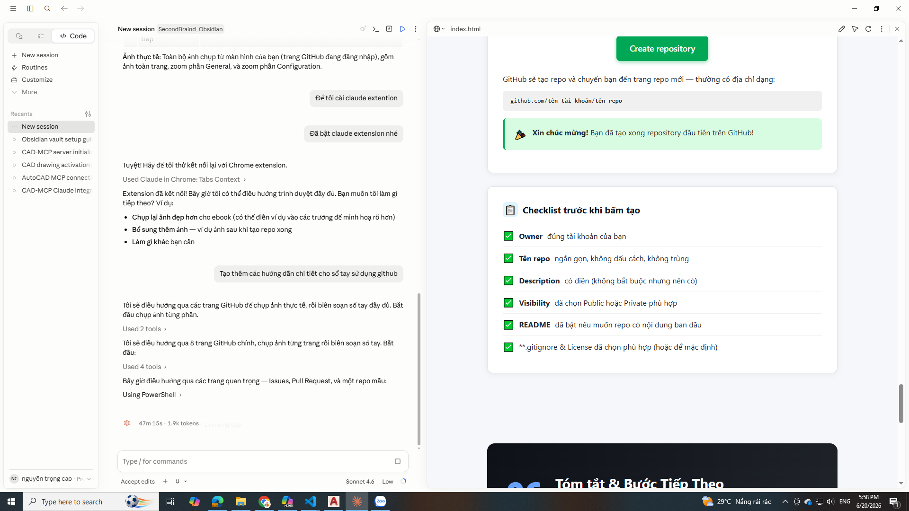

Sổ Tay
GitHub
Dành Cho Người Mới
Hướng dẫn từng bước với ảnh chụp thực tế — từ khái niệm cơ bản đến cộng tác nhóm chuyên nghiệp.
GitHub là gì?
Hiểu rõ nền tảng trước khi bắt đầu
🌐 Ba khái niệm cốt lõi
Git
Phần mềm theo dõi thay đổi trong code. Chạy trên máy tính của bạn (offline).
GitHub
Nền tảng đám mây lưu trữ code Git trực tuyến. Thêm tính năng cộng tác, review, CI/CD...
Repository (Repo)
Một thư mục dự án trên GitHub. Chứa toàn bộ code + lịch sử thay đổi.
Commit
Một điểm lưu trong lịch sử. Mỗi commit ghi lại ai thay đổi gì, lúc nào.
🔄 Quy trình làm việc cơ bản
- 1Tạo hoặc Clone repo
Tạo repo mới trên GitHub, hoặc tải repo có sẵn về máy.
- 2Chỉnh sửa file
Viết code, thêm file, sửa nội dung trên máy tính.
- 3Commit thay đổi
Lưu điểm checkpoint với mô tả rõ ràng về những gì đã thay đổi.
- 4Push lên GitHub
Đẩy code từ máy lên GitHub để lưu trữ và chia sẻ.
- 5Pull / Cộng tác
Kéo code mới nhất từ người khác về máy để tiếp tục làm việc.
🆚 GitHub vs các công cụ khác
| Công cụ | Giống nhau | Khác biệt |
|---|---|---|
| Google Drive | Lưu trữ đám mây | Drive không theo dõi thay đổi dòng code; GitHub theo dõi từng ký tự thay đổi |
| Dropbox | Sync file | Không có tính năng review code, PR, branching |
| GitLab / Bitbucket | Tương tự GitHub | GitHub phổ biến nhất, nhiều open source, tích hợp rộng nhất |
Dashboard & Giao diện chính
Làm quen với trang chủ sau khi đăng nhập
🖥️ Trang Dashboard (github.com)
↑ Trang chủ GitHub sau khi đăng nhập — bạn thấy feed hoạt động và repo gần đây
📌 Các thành phần chính trên Dashboard
-
①Thanh điều hướng trên cùng (Top Nav)
Chứa: logo GitHub, ô tìm kiếm, thông báo 🔔, avatar tài khoản, và nút + để tạo repo/gist mới nhanh.
-
②Feed hoạt động (Activity Feed)
Hiển thị các sự kiện mới nhất từ người bạn theo dõi và repo bạn đã star — commit mới, PR, issue...
-
③Repo gần đây (Top Repositories)
Cột bên trái liệt kê các repo bạn truy cập gần nhất. Nhấn để mở nhanh.
-
④Explore (Khám phá)
GitHub gợi ý repo và người dùng phù hợp với sở thích của bạn.
Tạo Repository mới
Khởi động dự án của bạn trên GitHub
🚀 Truy cập trang tạo repo
Có 3 cách vào trang tạo repo:
- AURL trực tiếp:
Gõ
github.com/newvào thanh địa chỉ trình duyệt - BNút + trên nav bar:
Click + → chọn New repository
- CTrang Your repositories:
Click nút New màu xanh lá ở góc trên phải
📋 Form tạo repo — Phần General

| Trường | Ý nghĩa | Ghi chú |
|---|---|---|
| Owner * | Tài khoản sở hữu repo | Thường là tên bạn, hoặc tên tổ chức |
| Repository name * | Tên định danh duy nhất | Dùng - thay dấu cách, không ký tự đặc biệt |
| Description | Mô tả ngắn dự án | Không bắt buộc, nhưng nên điền |
⚙️ Form tạo repo — Phần Configuration

| Cài đặt | Lựa chọn | Nên chọn gì? |
|---|---|---|
| Visibility | Public / Private | Public để chia sẻ, Private để bảo mật |
| Add README | On / Off | ✅ Nên bật — tạo trang giới thiệu dự án |
| Add .gitignore | Theo ngôn ngữ | Chọn đúng ngôn ngữ dự án (Node, Python...) |
| Add license | MIT, Apache... / None | MIT nếu muốn open source |
Giao diện Repository
Khám phá các tab và tính năng bên trong một repo
🗂️ Tổng quan trang Repository

↑ Trang chính của một repository — ví dụ: github.com/github/gitignore
📑 Ý nghĩa các Tab chính
| Tab | Nội dung | Dùng khi nào? |
|---|---|---|
| 📄 Code | Duyệt file, xem nội dung | Mặc định — xem code dự án |
| ⚠️ Issues | Danh sách lỗi / nhiệm vụ | Báo lỗi, đề xuất tính năng mới |
| 🔀 Pull Requests | Đề xuất thay đổi code | Review code trước khi merge |
| ⚡ Actions | CI/CD tự động | Tự động test/deploy khi push code |
| ⚙️ Settings | Cài đặt repo | Chỉ chủ repo mới thấy và sửa được |
📁 Các thành phần trong tab Code
- ABranch selector (Chọn nhánh)
Nút dropdown hiển thị nhánh hiện tại (thường là
main). Nhấn để chuyển sang nhánh khác. - BFile browser (Duyệt file)
Danh sách file và thư mục. Nhấn vào file để xem nội dung, nhấn vào folder để đi vào trong.
- CCommit message gần nhất
Mỗi file hiển thị mô tả commit cuối cùng thay đổi nó — giúp bạn biết file được cập nhật vì lý do gì.
- DREADME.md
Tự động hiển thị phía dưới danh sách file — đây là "bìa" của dự án.
- ENút Code (xanh lá)
Mở dropdown để clone repo (HTTPS/SSH) hoặc tải ZIP về máy.
✏️ Chỉnh sửa file trực tiếp trên GitHub
Bạn có thể chỉnh sửa file mà không cần cài Git hay clone về máy:
- 1Nhấn vào tên file
Mở xem nội dung file.
- 2Nhấn icon ✏️ (Edit)
Nút bút chì ở góc trên phải vùng nội dung file.
- 3Sửa nội dung
GitHub cung cấp editor đơn giản ngay trong trình duyệt.
- 4Commit changes
Điền mô tả thay đổi → bấm Commit changes. Thay đổi được lưu ngay.
Commit & Lịch sử thay đổi
Xem ai đã thay đổi gì, khi nào, vì sao
📜 Trang Commits History

↑ Danh sách các commits — mỗi dòng là một lần lưu thay đổi
🔍 Đọc hiểu một Commit
- 📝Commit message
Mô tả ngắn về thay đổi (do người commit viết). Ví dụ: "Fix typo in README", "Add login feature"
- 👤Tác giả (Author)
Tên + avatar người đã tạo commit. Nhấn để xem profile.
- 🕐Thời gian
Cách đây bao lâu (hover để xem ngày giờ cụ thể).
- #Commit hash
Mã định danh duy nhất (7 ký tự hiển thị, đầy đủ là 40 ký tự). Dùng để tham chiếu trong lệnh Git.
💬 Quy tắc viết Commit message tốt
| ❌ Không nên | ✅ Nên viết |
|---|---|
| fix | Fix null pointer error in login form |
| update | Update README with installation steps |
| abc | Add user authentication with JWT |
| changed stuff | Refactor database connection pooling |
💻 Lệnh Commit trên Terminal
Branch (Nhánh)
Làm việc song song mà không ảnh hưởng code chính
🌿 Branch là gì?
Hình dung repo như một cây. Nhánh main là thân cây (code chính thức). Branch mới là cành cây — bạn thử nghiệm tính năng mới mà không lo làm hỏng thân cây.
feature/login, làm xong, test ổn → mới merge vào main. Trong lúc đó, đồng nghiệp vẫn làm branch khác bình thường.📋 Quy ước đặt tên branch
| Loại | Tên mẫu | Dùng khi |
|---|---|---|
| Tính năng mới | feature/ten-tinh-nang | Thêm chức năng mới |
| Sửa lỗi | fix/mo-ta-loi | Sửa bug cụ thể |
| Hotfix khẩn | hotfix/loi-khẩn-cap | Lỗi nghiêm trọng trên production |
| Cải thiện | refactor/ten-phan | Viết lại code không đổi tính năng |
💻 Làm việc với Branch
Issues — Quản lý công việc
Theo dõi lỗi, nhiệm vụ và đề xuất tính năng
⚠️ Trang Issues

↑ Danh sách Issues — mỗi Issue là một nhiệm vụ hoặc báo cáo lỗi
📌 Issue là gì và dùng khi nào?
Báo lỗi (Bug report)
Tìm thấy lỗi trong code → tạo Issue mô tả lỗi, cách tái hiện.
Yêu cầu tính năng
Đề xuất thêm chức năng mới vào dự án.
Câu hỏi / Hỗ trợ
Hỏi về cách dùng, cách cài đặt dự án.
Nhiệm vụ (Task)
Giao việc cho thành viên trong nhóm.
✏️ Cách tạo Issue mới
- 1Vào tab Issues
Nhấn tab Issues trong repo.
- 2Bấm "New issue"
Nút xanh lá ở góc trên phải.
- 3Điền tiêu đề
Ngắn gọn, rõ ràng. Ví dụ: "Login button doesn't work on mobile"
- 4Mô tả chi tiết
Hỗ trợ Markdown. Thêm ảnh chụp màn hình, bước tái hiện lỗi, môi trường...
- 5Gán nhãn (Labels) & Người phụ trách (Assignees)
Phân loại và giao việc cho đúng người.
- 6Submit new issue
Bấm nút xanh lá để tạo.
🏷️ Trạng thái Issue
● Open Issue đang mở — chưa được xử lý hoặc đang xử lý
● Closed Issue đã đóng — đã sửa xong hoặc không hợp lệ
Pull Request (PR)
Đề xuất, review và merge code một cách an toàn
🔀 Trang Pull Requests

↑ Danh sách Pull Requests — mỗi PR là một đề xuất thay đổi code chờ review
🤔 Pull Request là gì?
Khi bạn làm xong tính năng trên branch riêng, bạn tạo Pull Request để:
- 👀Cho đồng đội review
Người khác xem code của bạn, comment góp ý trước khi merge.
- ✅Chạy test tự động
GitHub Actions có thể tự chạy test — chỉ merge khi tất cả pass.
- 🔀Merge vào main
Sau khi được approve → merge code vào nhánh chính một cách an toàn.
📝 Quy trình tạo Pull Request
- 1Push branch lên GitHub
git push origin feature/ten-tinh-nang - 2GitHub gợi ý tạo PR
Sau khi push, GitHub hiện banner "Compare & pull request" — nhấn vào.
- 3Điền tiêu đề & mô tả
Giải thích PR này làm gì, tại sao cần thay đổi này.
- 4Chọn Reviewers
Tag người cần review code của bạn.
- 5Create Pull Request
Bấm nút xanh lá. Đồng đội nhận thông báo.
- 6Review & Sửa
Đồng đội comment, bạn sửa, push thêm commit vào branch đó.
- 7Merge PR
Được approve → bấm Merge pull request.
🏷️ Trạng thái Pull Request
● Open Đang chờ review hoặc sửa thêm
● Merged Đã được merge vào branch đích
● Closed Bị đóng mà không merge (bị từ chối hoặc không cần nữa)
Fork — Sao chép Repo người khác
Đóng góp vào open source hoặc dùng code làm nền tảng
🍴 Fork là gì?
Fork là tạo bản sao của repo người khác vào tài khoản của bạn. Bạn có toàn quyền chỉnh sửa bản sao đó.
Clone (tải về)
Tải repo về máy. Không có quyền push lên repo gốc của người khác.
Fork (sao chép)
Tạo bản sao trên tài khoản bạn. Có thể chỉnh sửa tự do, rồi gửi PR về gốc.
📝 Cách Fork và đóng góp
- 1Nhấn nút "Fork" trên repo gốc
Nút Fork ở góc trên phải trang repo. GitHub tạo bản sao vào tài khoản bạn.
- 2Clone bản fork về máy
git clone https://github.com/TEN-BAN/ten-repo.git - 3Tạo branch, làm thay đổi
Không làm việc trực tiếp trên
main— tạo branch riêng. - 4Push lên fork của bạn
git push origin feature/cua-ban - 5Tạo Pull Request về repo gốc
GitHub hiện nút "Contribute → Open pull request". Chủ repo gốc sẽ review và merge nếu đồng ý.
GitHub Profile
Trang cá nhân — portfolio kỹ thuật của bạn
👤 Trang Profile của bạn

↑ Trang profile — nơi nhà tuyển dụng sẽ xem để đánh giá kỹ năng của bạn
📊 Contribution Graph (Biểu đồ đóng góp)
Ô vuông xanh hiển thị mỗi ngày bạn commit bao nhiêu lần. Càng nhiều → màu càng đậm.
✨ Tạo Profile README đặc biệt
GitHub cho phép bạn thêm README cá nhân hiển thị trên trang profile:
- 1Tạo repo tên trùng với username
Ví dụ: username là
trongcao87→ tạo repo têntrongcao87 - 2Thêm file README.md
GitHub tự động hiển thị nội dung file này trên trang profile.
- 3Tuỳ chỉnh nội dung
Thêm giới thiệu bản thân, kỹ năng, dự án nổi bật, link liên hệ...
Bảng tra lệnh Git cơ bản
Cheat sheet — tra cứu nhanh khi cần
🔧 Khởi tạo & Clone
📦 Commit & Push
🌿 Branch
⬇️ Pull & Sync
📊 Bảng tổng hợp các lệnh hay dùng nhất
| Lệnh | Tác dụng | Tần suất dùng |
|---|---|---|
git status | Xem file nào thay đổi | ⭐⭐⭐⭐⭐ |
git add . | Thêm tất cả vào staging | ⭐⭐⭐⭐⭐ |
git commit -m "" | Lưu điểm checkpoint | ⭐⭐⭐⭐⭐ |
git push | Đẩy lên GitHub | ⭐⭐⭐⭐⭐ |
git pull | Lấy code mới nhất | ⭐⭐⭐⭐ |
git checkout -b | Tạo branch mới | ⭐⭐⭐ |
git log --oneline | Xem lịch sử ngắn gọn | ⭐⭐⭐ |
git clone | Tải repo về máy | ⭐⭐⭐ |